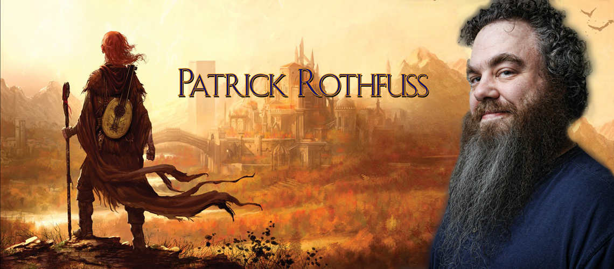
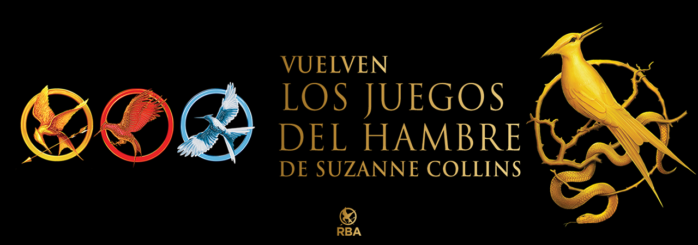

Las sagas (las buenas- sagas) son sistemas complejos, leer una saga es un ejercicio de aprendizaje, y el autor da las reglas de juego, a veces te da una geografía determinada, con sus propios territorios, espacios y fronteras. No necesariamente es un espacio real, es más, muchas veces el encanto de las sagas está en sus lugares imposibles de ver pero latentes en las páginas de una novela. En otras ocasiones, el autor propone una mitología definida, con sus limitaciones y alcances.

La novela cuenta la historia de Kvothe, un personaje legendario que, tras años de retiro, accede a contar a un cronista los verdaderos motivos por los que se convirtió en leyenda

...«Todo hombre sabio teme tres cosas: una tormenta en el mar, las noches sin luna y la cólera de un hombre bueno» La secuela de la extraordinaria El Nombre del Viento...

Las puertas de piedra continuará con la historia de Kvothe desde donde lo dejó El temor de un hombre sabio, y será el tercer y último día de la historia. Actualmente se desconoce la fecha de publicación.

Sólo una chica de 16 años, Katniss Everdeen, se anima a desafiar las normas para conseguir comida. Sus principios se pondrán a prueba con "Los juegos del hambre", espectáculo televisado que el Capitolio organiza para humillar a la población como un recordatorio de los días de guerra que no fueron ganados.

Contra todo pronóstico, Katniss Everdeen ha ganado los Juegos del Hambre anuales junto con el otro tributo de su distrito, Peeta Mellark. ... Pero hay rumores de rebelión, y Katniss y Peeta, para su horror, son la cara de esa rebelión. El Capitolio está furioso y quiere venganza.

Todo empieza cuando Katniss Everdeen logra salir del tercer "Vasallaje de los Veinticinco", los septuagésimo quintos Juegos del Hambre. ... Después de su rescate por los rebeldes del distrito 13, Katniss está convencida de convertirse en "El Sinsajo": un símbolo de la rebelión contra el Capitolio.